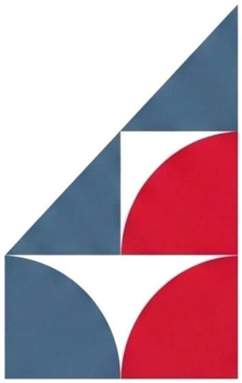

Bem-vindo à UEMG Guanhães. Comece por aqui
Primeira semana tem muita coisa nova de uma vez: e-mail, sistemas, senhas, salas. Respira. Esta trilha coloca tudo na ordem certa, um passo de cada vez, e em uma tarde você resolve o semestre inteiro.

Ele é a chave de tudo: Microsoft 365, comunicados oficiais e o Teams. O endereço é sempre prenome.matrícula@discente.uemg.br, e o nosso guia mostra o primeiro acesso tela por tela.
O Lyceum é o sistema da sua vida acadêmica: matrícula, notas, faltas e histórico. Na primeira vez, o usuário é o seu Registro Acadêmico e a senha é a sua data de nascimento, só números. O sistema pede uma senha nova na entrada: anote bem, porque ela vale também para o passo 3.
É a sala de aula virtual: materiais, atividades e fóruns de cada disciplina. A boa notícia: o login é o mesmo do Lyceum, sem cadastro novo.
O Lyceum no bolso, para Android e iPhone. Notas e faltas na fila do lanche.
Veja os horários da sua turma, marque "minha turma" para o site mostrar a aula do dia na página inicial, e salve a grade como imagem ou no calendário do celular. Depois, ache a sala no mapa desenhado do campus.
Matrícula, trancamento, exames e feriados: o calendário acadêmico mostra tudo, e dá para baixar direto para o Google Agenda ou o iPhone.
Na página inicial, toque em "Instalar no celular" e o site vira um aplicativo que funciona até sem internet. E se qualquer coisa travar pelo caminho, o NAE existe exatamente para isso: terças e quintas, das 18h às 19h, no Prédio do Administrativo.
Travou em algum passo? Acontece com muita gente, principalmente no e-mail. Não perca horas sozinho: chame o NAE com os prints do que apareceu na tela, que a gente destrava junto.